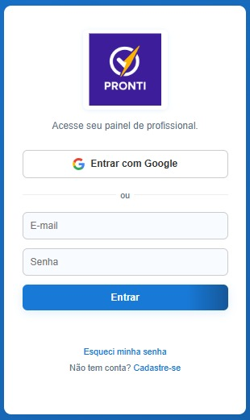
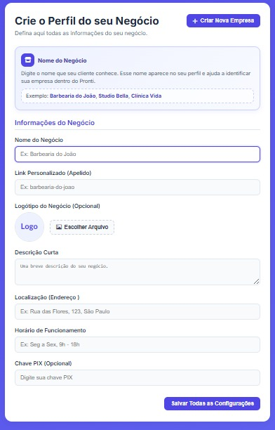

Guia por Telas
Essa é a tela de acesso ao sistema Pronti.
Digite seu e-mail e senha para entrar.

Após entrar sem empresa cadastrada, essa tela será exibida.
Clique em “Criar Nova Empresa”.
Preencha os dados do seu negócio nesta tela.
Depois clique em Salvar.
